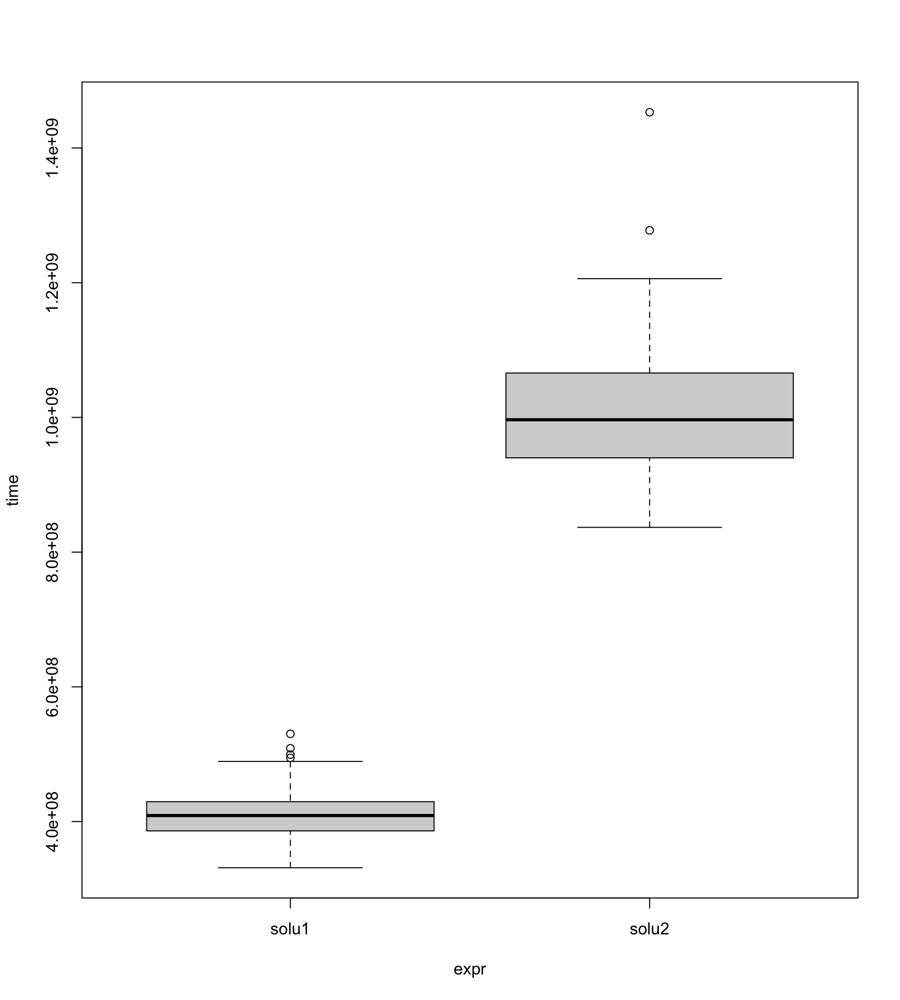

R小技巧：分组应用和排序去重的应用与比较
王诗翔
问题与方案
假设我们有这样一个数据集：
df <- data.frame(
c1 = c("a", "a", "a", "b", "b", "c"),
c2 = c(1, 3, 2, 1, 4, 2)
)
dfout c1 c2
out 1 a 1
out 2 a 3
out 3 a 2
out 4 b 1
out 5 b 4
out 6 c 2如果我们想保留每个c1分类和分类下的最大值，你会怎么操作？
思考一分钟。
如果使用惯了tidyverse套装，我们脑子里容易冒出来的是这样的解法：使用分组应用。
library(dplyr)df |>
group_by(c1) |>
summarize(c2 = max(c2, na.rm = TRUE))out # A tibble: 3 × 2
out c1 c2
out <chr> <dbl>
out 1 a 3
out 2 b 4
out 3 c 2在数据不是特别大的时候，使用这种策略没有任何问题。但如果分组有成千上万，分组的时间代价就很高了。有没有其他的方式可以解决该问题呢？
其实处理这种去重问题，特别还涉及到排序，我们可以采用先排序再去重的方式解决。
那么解决的方案就成了：
df |>
arrange(desc(c2))|>
distinct(c1, .keep_all = TRUE)out c1 c2
out 1 b 4
out 2 a 3
out 3 c 2哪个更快？
如果想知道哪一个方案更快，我们需要构造一个模拟数据集进行测试。
n <- 10000000
ng <- 100
gs <- expand.grid(LETTERS, 1:50) |>
mutate(g = paste0(Var1, Var2)) |>
pull(g) |> head(ng)
set.seed(2021)
data <- data.frame(
g = sample(gs, size = n, replace = TRUE),
val = rnorm(n, sd = 100)
)分别包装2种解法：
solution1 <- function(df) {
df |>
group_by(g) |>
summarize(val = max(val, na.rm = TRUE))
}
solution2 <- function(df) {
df |>
arrange(desc(val))|>
distinct(g, .keep_all = TRUE)
}使用专门的测试包进行测试：
rv <- microbenchmark::microbenchmark(
solu1 = solution1(data),
solu2 = solution2(data),
times = 100
)plot(rv)
可以看的出来，在这个只有2个变量的数据集测试中，第一种方法远快于第二种方法。 但注意，这里其实存在很多的变量，包括数据的行数、分组数目、以及实际情况下数据集的变量数目。 哪种更适合需要根据现实场景进行测试考察。
本文的重点是，问题的解决之道往往不只一种，当程序慢下来的时候，我们不要忘记思考和尝试其他的方案。